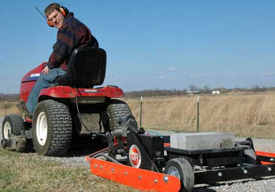

Anyone who has graded a driveway using a blade on a tractor is usedto the idea that you need to put a lot of weight on the blade to doany good. But that may not be the best approach.
Last year DR PowerEquipment introduced the Power Grader, an ingenious inventionthat grooms and grades dirt and gravel surfaces using a lawntractor or all-terrain vehicle. We took advantage of the company'srisk-free, six-month trial offer and discovered that the graderworks great!
The Power Grader is equipped with a line of carbide-steel'scarifiers,' or teeth, like those on some tractor blades,positioned in front of the grader's blade. What makes the PowerGrader different is an actuator that lets you adjust the height ofthe grader's wheels, raising or lowering the scarifiers.
I set the teeth a few millimeters below the roadbed for the firstpass, then gradually lowered them until I had loosened two inchesof rock and gravel. Then I pulled the grader up and down thedriveway until it was beautifully smooth. Compared to thetractor-mounted blades I've used, the Power Grader was easier touse and less likely to wreck the driveway.
At less than $1,000 the Power Grader costs less than a tractorblade ? not to mention the tractor you would need to pull it. Andif you get some of your neighbors to share the cost, it becomes avery affordable way to keep country driveways in perfectcondition.
|
 This DR Power Grader can smooth out even the roughest driveways. |
|
|